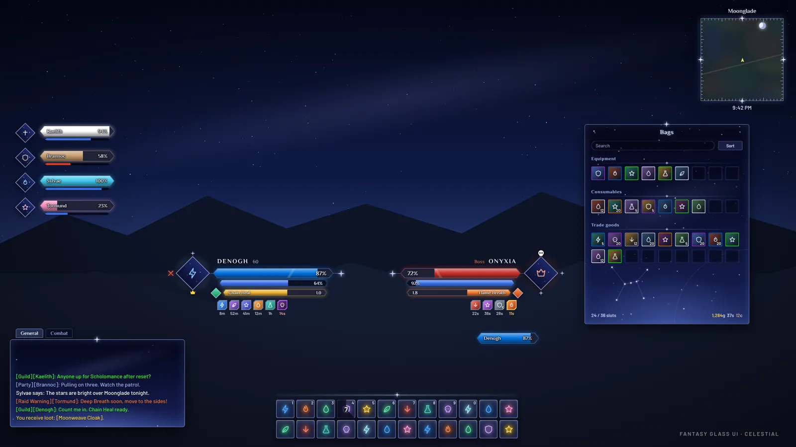
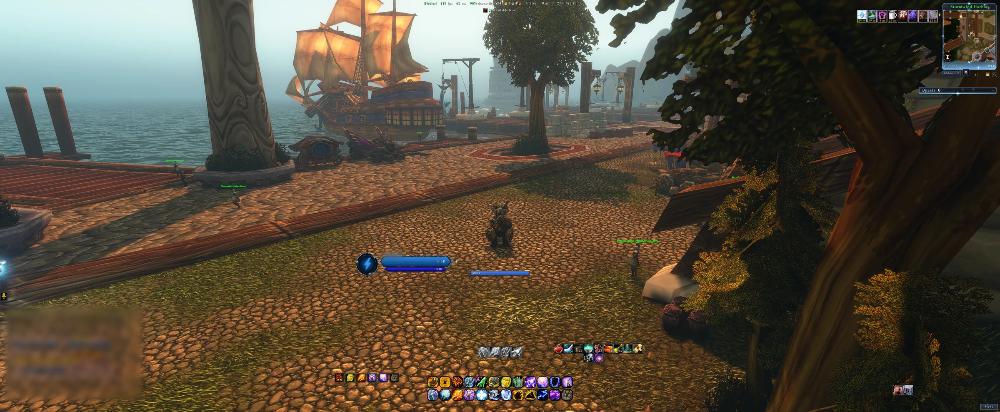
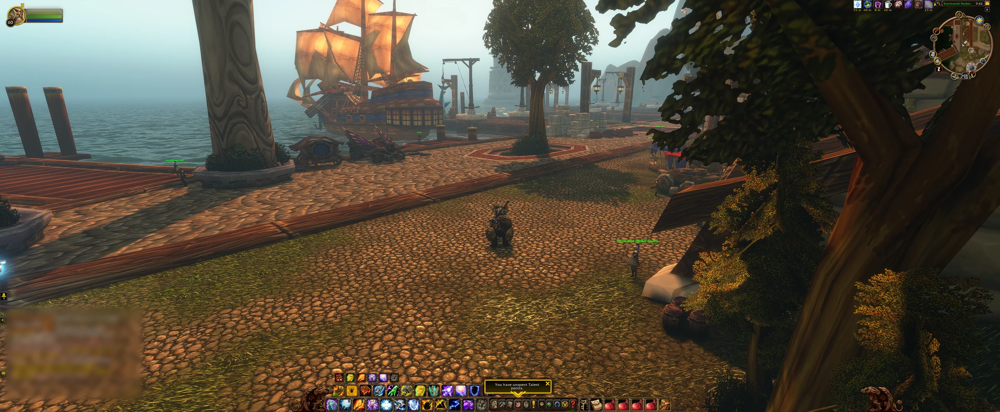

Your whole interface, cut like a gem.
Unit frames, action bars, raid frames, nameplates, bags, quests, the minimap and every one of the game's own windows, in one look you choose from 116 themes. One add-on, set up in a minute, and every part of it can be switched off.
The same screen, cut like a gem
Drag the line. On the left, a plain interface; on the right, the same screen with Fantasy Glass UI in a Celestial theme.


PlainFantasy Glass UINameplates of its own
Our own health bar on a black backing, the level in its color, and threat glowing on the edge.
Buttons cut like gems
Action buttons and bag slots lose their corners, and the cooldown sweep follows the cut.
A diamond minimap
A fine rim and a star on each point, with the zone, coordinates and clock still on it.
Every bar
Cast and crafting bars, breath and fatigue, timers, experience, reputation and totems.
116 themes in three families
Glass is see-through panes with a bright top edge. Fantasy is solid panels with a dark rim, grain and gold corners. Celestial is a moving night sky with stars, a faint Milky Way and a real constellation on big windows. Each family has one theme in your class color, and you can make your own from three colors. Click a theme to see it larger.
Make a theme of your own
Pick three colors and a family, and the rest is worked out the way the add-on does it. Copy the code, then in the game type /fgui sharepreview, paste it and press Use it.
Have a theme code already? Paste it here to see it
Every switch, and what it does
Every switch in the add-on, in eleven sections. Everything can be turned on or off on its own. Pick a section, or search all of them.
Loading the list of switches...
Typed in chat, starting with /fgui
In the game, /fgui help shows all of them in a window you can search.
Recent versions
Every version, from the first release to today, is on the changelog page.
Asked often
Which game is it for?
WoW Forever (interface 16001). It goes in World of Warcraft/_forever_/Interface/AddOns, as three folders side by side.
Does it work with my other add-ons?
Yes. When you already use an add-on that does the same job, like Plater for nameplates, Bagnon or Baganator for bags, or Grid2, VuhDo or Cell for raid frames, Fantasy Glass UI steps aside for that part and keeps everything else. /fgui conflicts off makes it keep its own instead.
Can I use only some of it?
Yes. Every part has its own switch in /fgui, so you can keep the bags and nameplates, say, and leave the rest to the game.
I prefer square frames. Can I get the classic look?
Yes. In /fgui, under Frames and bars, choose Classic instead of Starcut and every frame, bar and button goes back to the box shape, in whichever theme you have.
Does it help with color blindness, low vision or hearing?
Yes, a whole category of it. /fgui access has colors for each kind of color vision, high-contrast themes, lettering made for low vision and for dyslexia, captions for sounds, reading aloud of talk, quests and tooltips, the game's windows by keyboard, keys for one hand, safe flashing, a still sky and a calm mode. Everything it does, need by need, is on the accessibility page.
Will it slow my game down?
Parts you turn off do not run at all. To see for yourself, /fgui perf shows how much time each part takes, /fgui perf fight measures your next fight, and /fgui memory shows its memory.
Something looks wrong. How do I put it back?
/fgui undo puts back your last move or resize, and /fgui history lists what you changed so you can undo any of it. /fgui reset (typed twice) returns the profile to how it came, and a backup is kept first: /fgui backup lists them. /fgui safe reloads with every feature off, to find out whether a problem is ours.
Can I share my setup with a friend?
Yes. /fgui pack puts your whole interface (profile, layout, theme, bars and mail rules) in one string to paste, and /fgui send <name> layout sends it straight to another player who has the add-on.
Where can I get help, or show off my setup?
On our Discord: ask in #fgui-help, post screenshots in #show-your-ui and share theme codes in #themes. Bugs and ideas have their own channels there too.
Which languages does it speak?
English, German, French, Spanish, Russian, Portuguese, Italian, Korean and Chinese. It follows your game's language.
Is it free?
Yes, free, with no ads and nothing to buy.
Three steps
Install it
Use the CurseForge app, or put the three folders from the zip side by side in Interface/AddOns.
Pick a look
A guided setup opens the first time you log in. Choose a theme, a layout and your role.
Make it yours
/fgui opens the options, /fgui move arranges your panels, and /fgui help lists every command.
Found a bug, or have an idea?
Come and talk on Discord, or tell us on GitHub. For a bug, the most useful thing to include is the add-on's own report: open /fgui in the game, press Report a Problem and paste the text. Anything else: email-forwarding@fantasyglassui.com.